Viajante geral
Viaja sozinho, a dois ou em grupo de vez em quando.
- IncluirViajou ao menos 1 vez nos últimos 12 meses
- IncluirParticipou do planejamento
- ExcluirViagem só a trabalho, sem lazer
Como centralizamos o caos do planejamento de viagem em uma experiência fluida.
Projeto em equipe na formação em UX da UX Unicórnio (2026). O Viaja+ nasceu como um produto paralelo dentro de uma empresa de viagens, para apoiar quem não tem experiência ou segurança para planejar a viagem por conta própria.
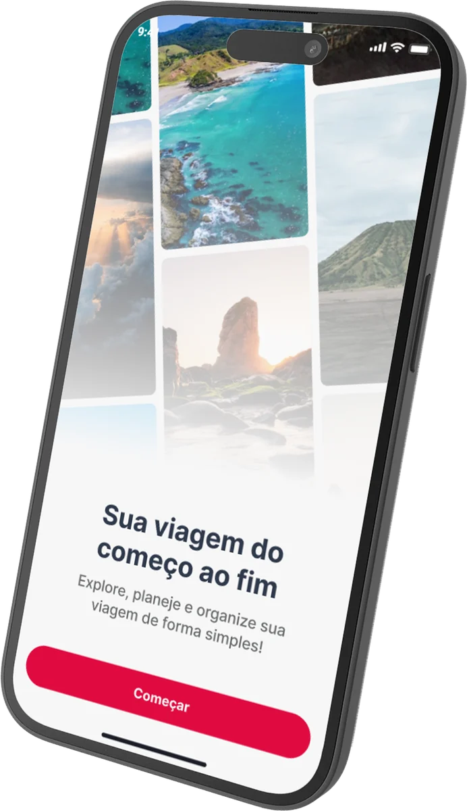
Planejar uma viagem sozinho costuma ser improvisado: planilhas, anotações e vários apps ao mesmo tempo.
O resultado é um processo confuso, trabalhoso e inseguro. A oportunidade era uma solução gratuita que organizasse a viagem de forma simples e centralizada e ajudasse a montar o roteiro.
Tudo conectado aos objetivos da empresa: oferecer serviços relevantes no momento certo, sem abordagem invasiva.
Cada vez mais gente planeja por conta própria, por economia, autonomia e flexibilidade. E a informação fica espalhada.
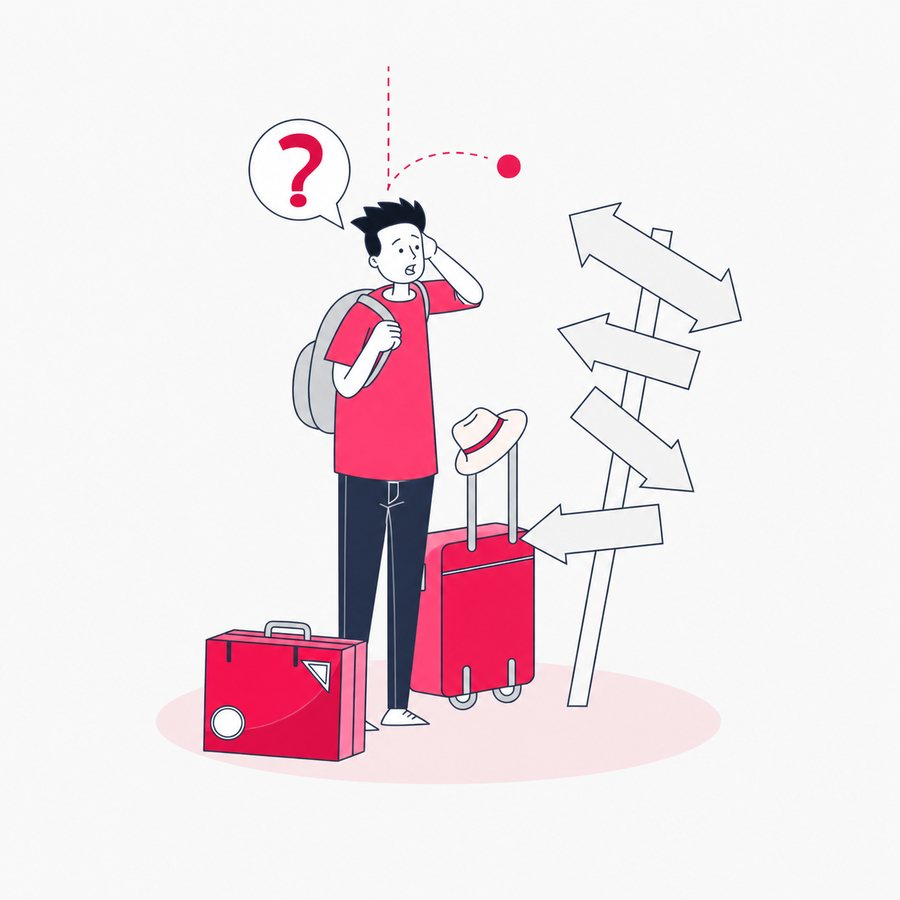
Passagens, hospedagens, documentos e roteiros ficam em lugares diferentes. O processo vira desgastante, inseguro e imprevisível.
Para o negócio, a relevância é direta: ajudar a organizar a viagem gera consciência dos serviços da empresa, conversão e receita.
Antes de falar com usuários, mapeamos o que já sabíamos, o que supúnhamos e o que precisava ser respondido.
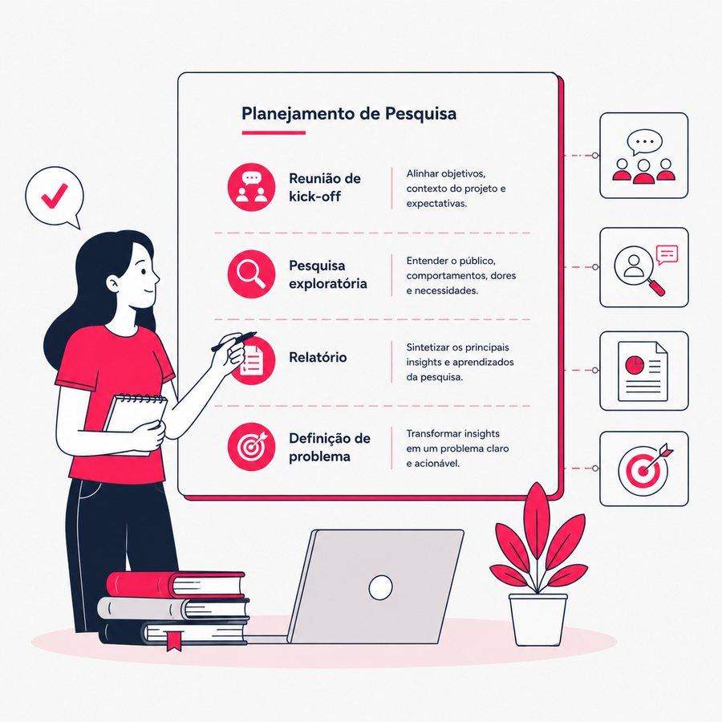
Duas frentes: conversas longas para entender o porquê e um survey para medir o quanto.
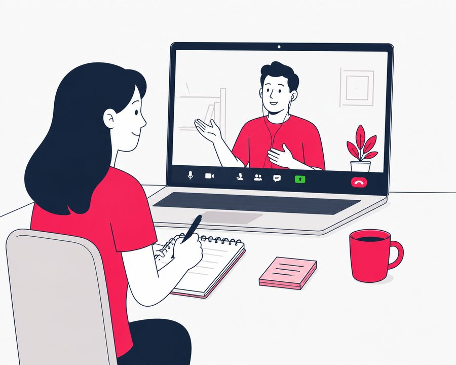
entrevistas em profundidade, gravadas com consentimento
minutos, em média, por conversa
blocos no roteiro semiestruturado
Contexto de vida, planejamento, experiência durante a viagem e reação a ofertas e pacotes.
Quem sente de formas diferentes o peso de organizar uma viagem? Cada perfil teve critérios próprios de recrutamento.
Viaja sozinho, a dois ou em grupo de vez em quando.
Segurança, autonomia e planejamento em primeiro plano.
Três ou mais pessoas, com decisões coletivas.
Planejamento moldado por acessibilidade física, sensorial ou cognitiva.
Segurança, entretenimento infantil e logística familiar.
respondentes, a maioria entre 26 e 35 anos, com gênero equilibrado
planejam a viagem sempre ou quase sempre
nunca pagaram por um serviço de organização de viagem
25 perguntas em três blocos: triagem, comportamentos e opiniões.
% dos respondentes
média, escala de 1 a 5
média, escala de 1 a 5
% dos respondentes que citaram
A dor não é falta de informação. É excesso sem organização.
As pessoas querem um único lugar para roteiro, orçamento, documentos e sugestões confiáveis. Segurança e prova social pesam mais que promoção: avaliações reais, transparência de preço e informação por bairro. O resultado validou os quatro “Como poderíamos”.
Mapa de afinidade, Jobs to be Done, persona, jornada e análise cruzada de survey e entrevistas.
Persona: exploradora e planejadora
“Não precisa de automação, precisa de controle.”
Da inspiração ao pós-viagem. A curva emocional cai justamente no planejamento e na preparação, os momentos que deveriam ser leves, e é ali que o produto entra.
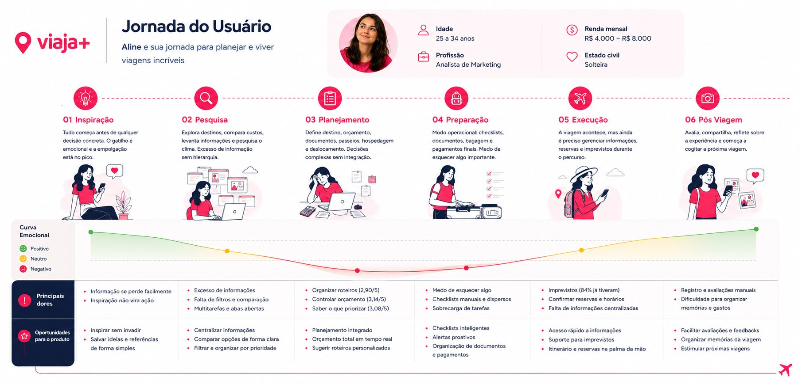
Deslize para o lado para ver a jornada inteira.
Crazy 8 para cada “Como poderíamos”: oito ideias em oito minutos, quatro vezes.
Como poderíamos dar segurança na escolha de destinos e pagamentos?
Como poderíamos centralizar as informações e reduzir a sobrecarga?
Como poderíamos ajudar no controle do orçamento?
Como poderíamos organizar roteiros, deslocamentos e horários?
As ideias do Crazy 8 foram posicionadas por dois critérios combinados: impacto nas dores mais críticas da Aline e viabilidade para o primeiro ciclo do produto.
Das prioridades aos fluxos do usuário, e dos fluxos ao protótipo de alta fidelidade no Figma. Três fluxos contam a história.
Uma promessa e uma ação: o onboarding termina em “Começar”, e o login aceita e-mail, Google, Facebook ou Apple.
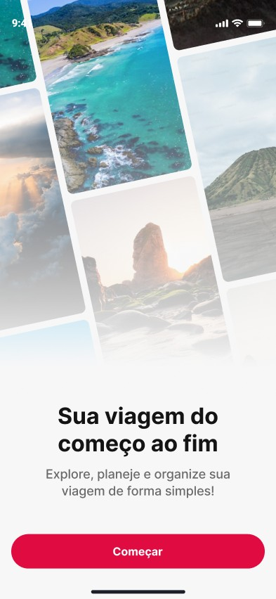
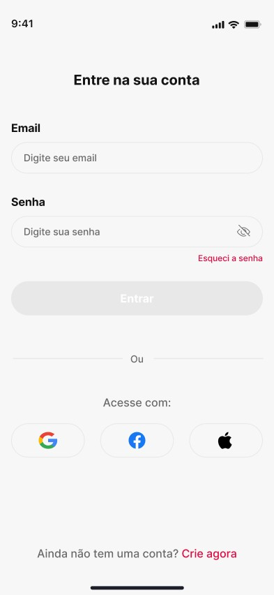
Barra de progresso sempre visível. Orçamento e convidados são opcionais (“você pode ajustar a qualquer momento”, “pode adicionar depois”), para não travar quem só quer começar.
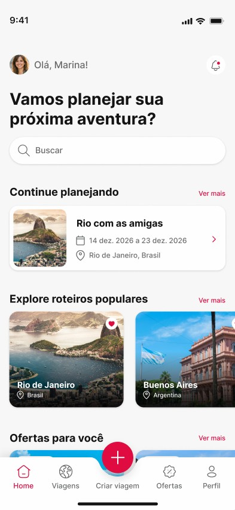
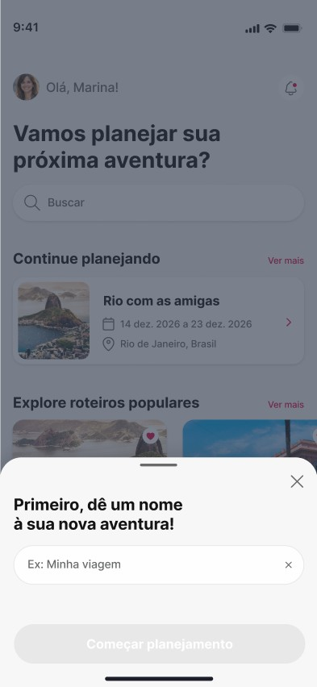
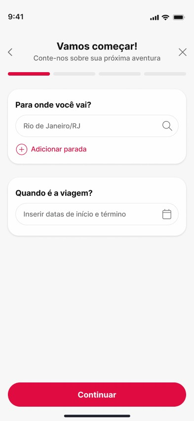
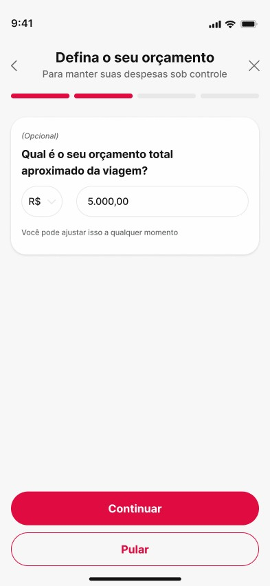
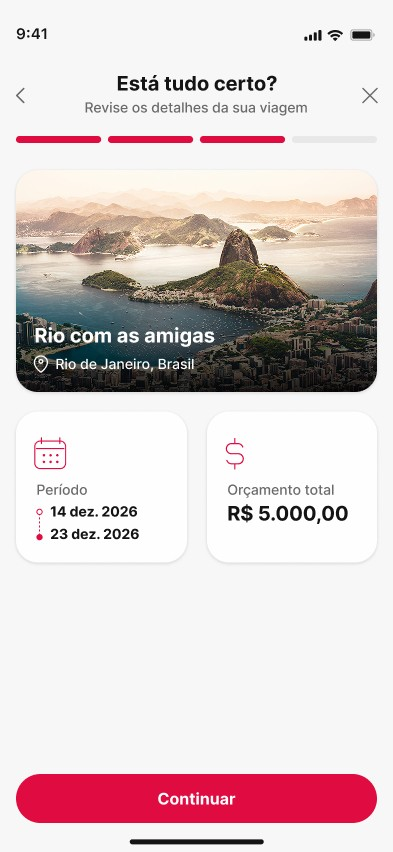
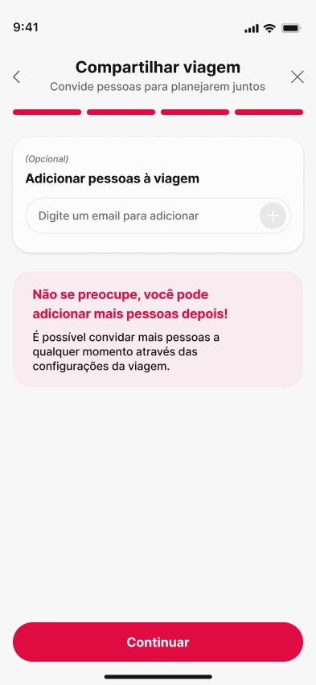
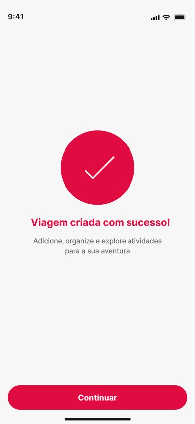
Quatro abas (Itinerário, Explorar, Checklist, Despesas) e um único botão “+” no centro para adicionar qualquer item. Despesas podem ser individuais ou divididas com o grupo.
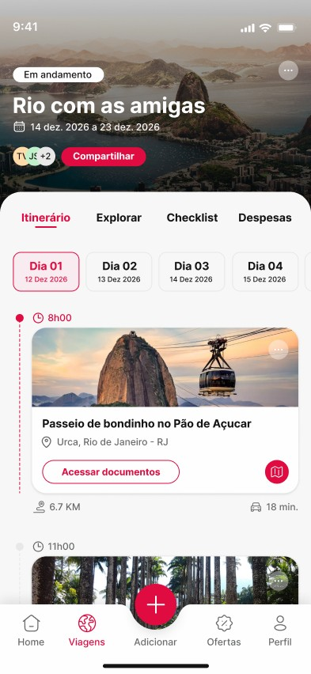
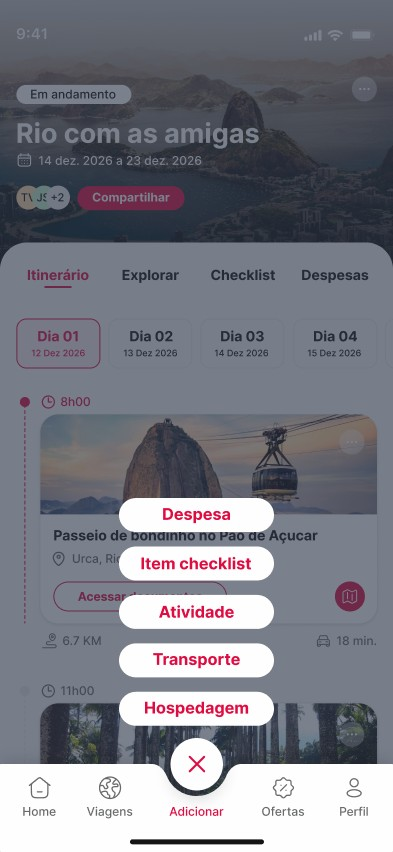
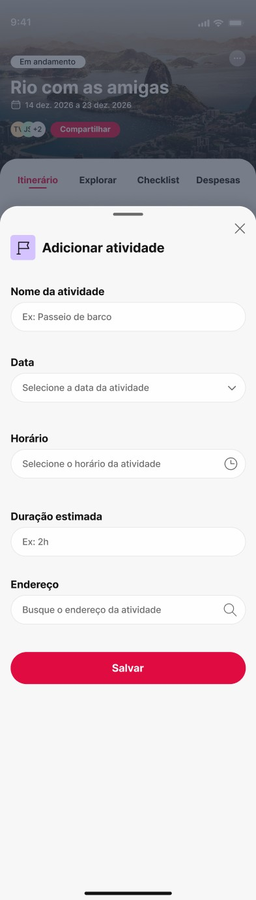
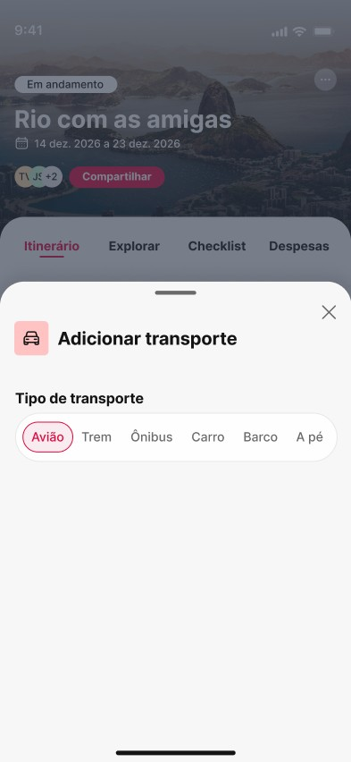
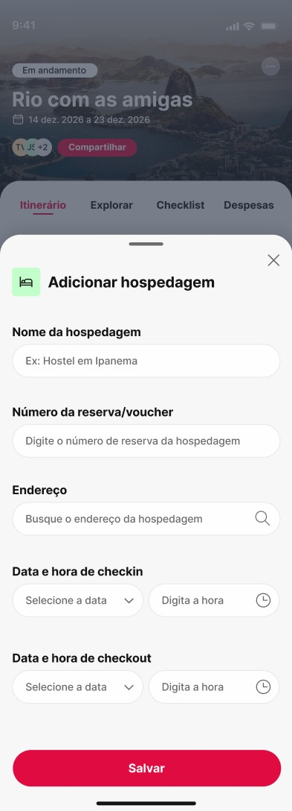
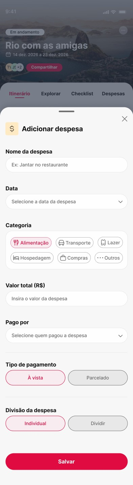
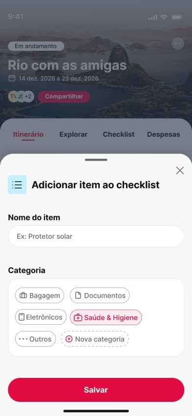
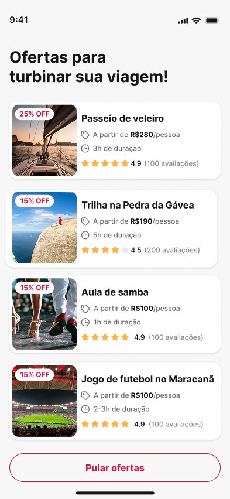
As ofertas aparecem no contexto da viagem já criada, com avaliações de outros viajantes e o botão “Pular ofertas” sempre à vista. É o equilíbrio que o briefing pedia: valor para o negócio sem abordagem invasiva.
Telas do protótipo navegável. Nomes, preços e avaliações são dados fictícios do protótipo.
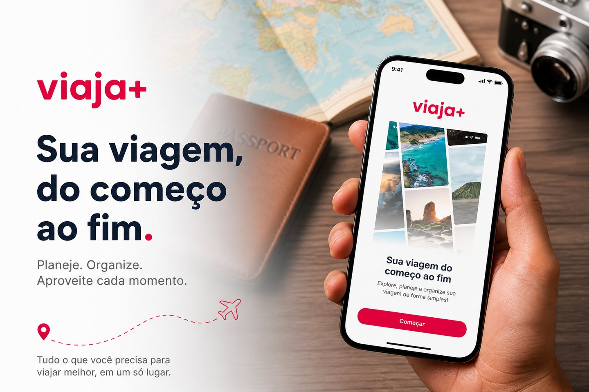
Uma marca clara e acolhedora: logotipo e chamadas para ação em carmim, textos em azul-marinho sobre fundo claro e fotos de paisagem no onboarding. O style guide organiza tudo em design tokens, com contraste conforme a WCAG.